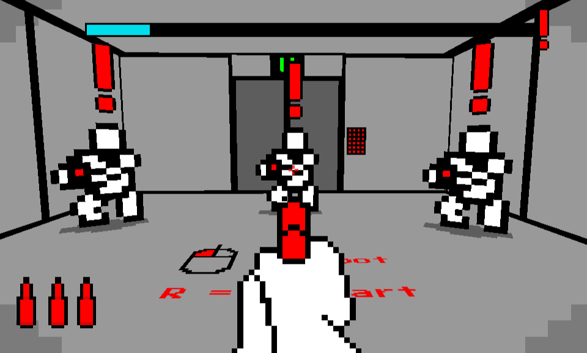

Let's start from the beginning.
There isn't a skill you need to start
learning and now is the perfect time to learn.
With ample resources and the internet
learning a new skill is just a few clicks away.
All that you need is time dedication.
None of the games you love or the products
you use in your everyday was made through
talent. All you need to do is to pour hours
into getting better and improving your skills.
Detail doesn't have to be everything.
You don't need to be an amazing artist.
Games come in all kinds of looks and
styles and there's no minimum requirement
you'd need to meet to make a great game.
Even with the simplest of looks you can
make a masterpiece. A great example of this
is a game called Red Handed

You don't have to be an amazing musician.
Musical talent isn't everything either, you
don't need a dedicated band to make music
for you, deep knowledge on music editing
software, or any number of expensive
equipment just to try and make your audio
sound better. The only thing you need is to
be able to record, after that you're all set.
A great way to prove this is the game Pencil Peril

You don't need to be an amazing programmer
either. To give an example why I'll ask you this,
do you know of the game Undertale?
Undertale is an RPG game in which you have to
explore the underground and find a way back
to the surface. The creator of this game, TobyFox
was still relatively new to programming at the time
and it's quite evident in portions of his game.
Despite this he made Undertale which sold over 500k
copies and that number has only soared over time.
Want a look for yourself? Check it out on Github

Click Here to learn more!